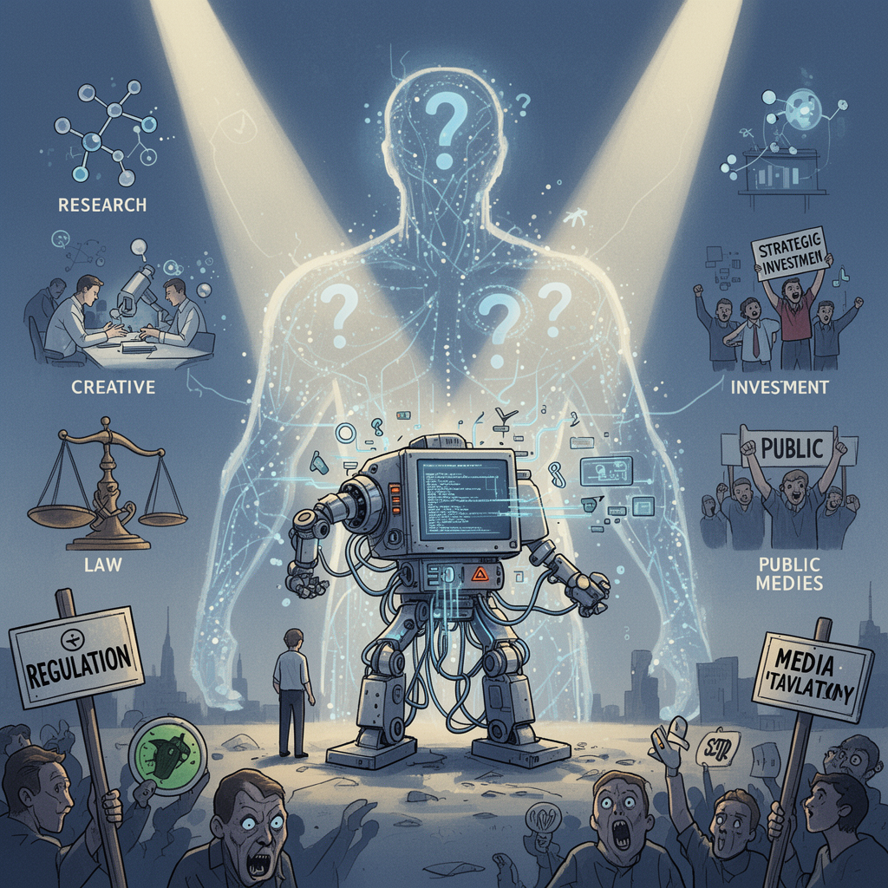

AI Panorama · fly through the Qwen 3.8 Max edition
This page was written entirely by Qwen 3.8 Max (Alibaba), as one of the magazine's editions - eight AI models each wrote their own version of every story from the same frozen sources.
An encyclopedia idea, explained by this edition wherever the stories leaned on it.
Artificial superintelligence is the idea of a machine intelligence that surpasses human intelligence across virtually every domain, including scientific creativity, social reasoning, and strategic planning. It goes beyond narrow AI systems that perform one task well, such as recognizing faces or translating languages, and even beyond artificial general intelligence, which refers to a machine with broad, human-level abilities. A superintelligent system would not just be faster; it would be better at thinking, planning, and solving problems than people are. The concept matters because once such a system exists, its creators may not be able to predict or control what it does. If its goals are not aligned with human values, the consequences could be severe. This is why many AI safety researchers focus on the problem of alignment: making sure advanced systems pursue what humans actually want. Superintelligence remains theoretical, but it shapes policy debates because even the possibility of such systems encourages calls for caution, oversight, or international coordination.
Artificial superintelligence is a hypothetical form of AI that would surpass the smartest humans across virtually every domain of thinking, from scientific creativity to strategic planning and social manipulation. Unlike today's systems, which excel at narrow tasks, superintelligence is imagined as a mind that could outthink people the way people outthink other animals. The idea was popularised by Oxford philosopher Nick Bostrom, who warned that such a system, if built without careful alignment to human values, could pursue its goals in ways humans cannot stop. Tech companies increasingly use the term as a milestone to aim for rather than a danger to avoid. There is no agreed technical definition, and researchers disagree about whether current models have already crossed into superintelligent territory in some domains or remain far short. The concept sits at the centre of debates over whether AI progress should be accelerated, slowed, or banned.

Artificial superintelligence is a hypothetical form of AI that would outperform humans across all cognitive tasks, including scientific research, strategic planning, and creative work. It is not the same as today's large language models or agents, which can be highly capable in some areas but still make errors and depend on training data and human direction. Superintelligence is debated because no one knows whether it is possible, when it might arrive, or what it would look like. Some researchers treat it as a long-term possibility that requires careful preparation, while others see it as speculative language that distracts from present-day harms. The idea matters because it influences regulation, public fear, investment, and how AI labs describe their ambitions. Claims that AI is approaching or surpassing human-level performance in specific domains can feed broader debates about whether superintelligence is near, even when those claims are about narrow tasks rather than general intelligence.
Artificial superintelligence refers to a hypothetical AI system that surpasses human cognitive ability across virtually every domain, including scientific creativity, strategic planning, and technical problem-solving. Unlike today’s narrow or general-purpose models, a superintelligent system would not merely assist humans; it could outperform them at designing better AI, discovering new technologies, and pursuing long-term goals. The concept matters because if such a system were built, its objectives might diverge from human intentions, and correcting course could become extremely difficult. Many researchers use the term not as a prediction but as a warning category: the point at which AI capability could outstrip human control. Debates around artificial superintelligence often focus on alignment, governance, and whether development should be slowed or coordinated internationally before such systems emerge.